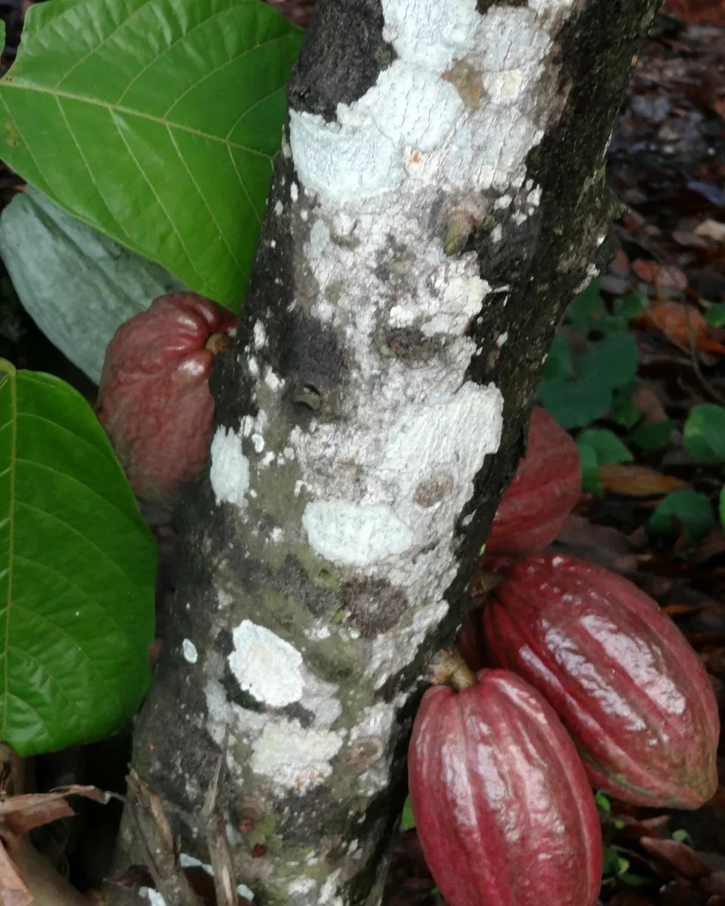
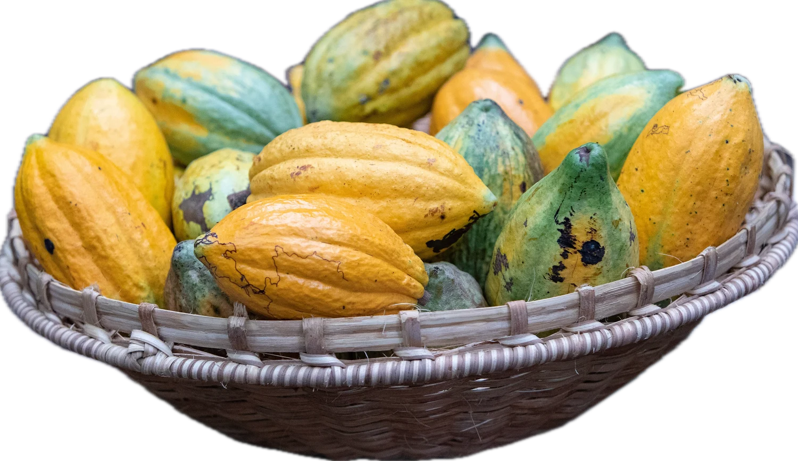
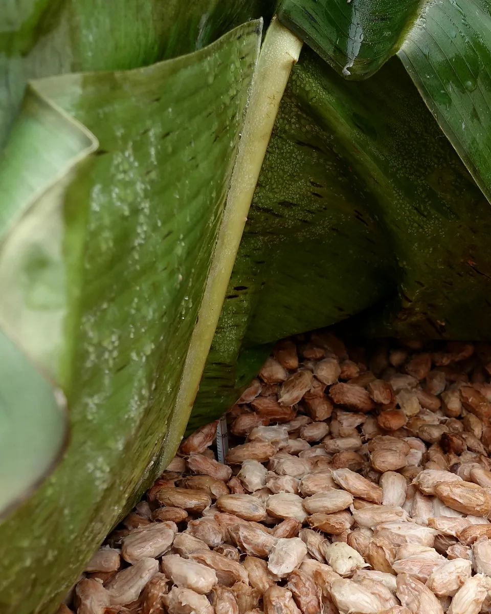
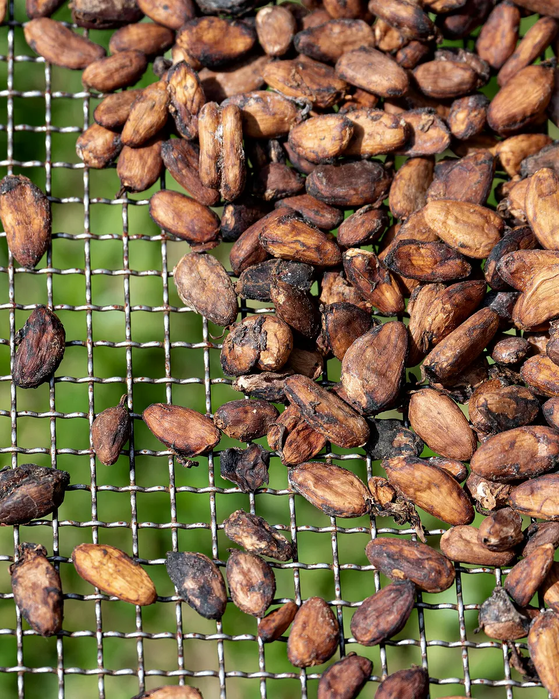
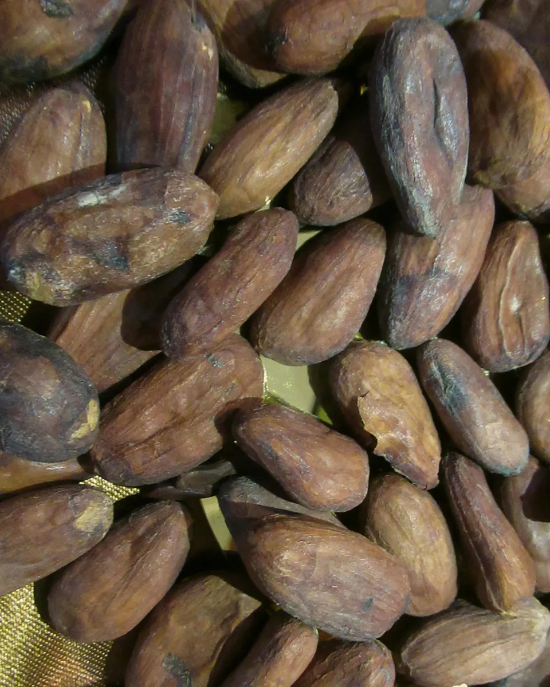
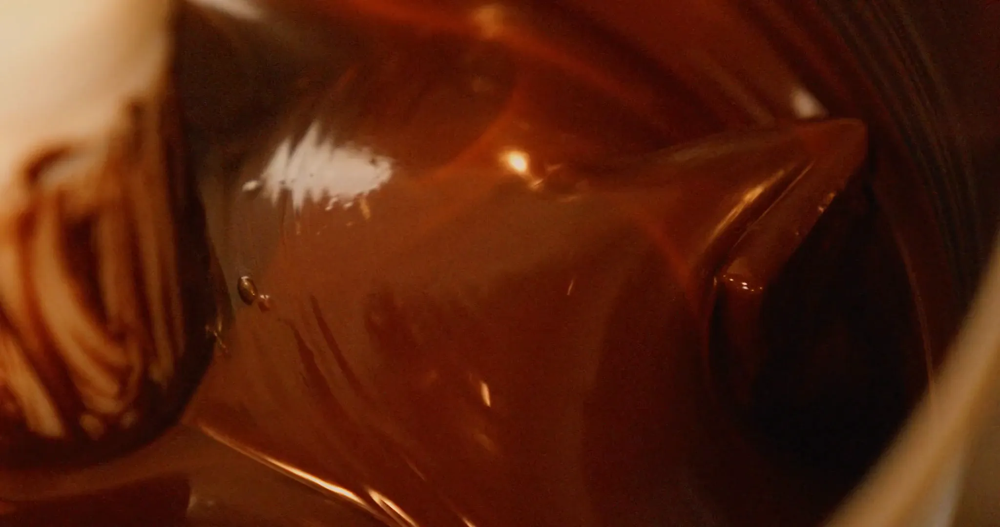
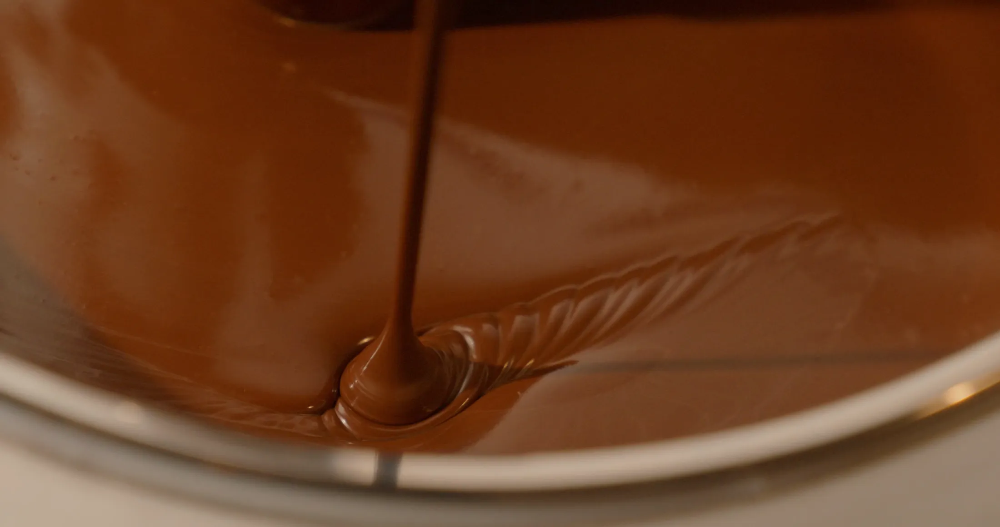

Cabosse
Cueillie mûre, ouverte le jour même
Le fruit pousse à même le tronc. On le détache sans blesser l'arbre.
NAWA transforme la fève en tablette à Soubré, à quelques pas des arbres qui l'ont portée.
Dans le sud-ouest de la Côte d'Ivoire, les cabosses se cueillent à la main, arbre après arbre.

La fève quitte la Côte d'Ivoire en sacs de jute. Elle devient tablette à des milliers de kilomètres de là.
NAWA fait le chemin inverse. Récolte, fermentation, séchage, torréfaction, conchage, moulage : tout se passe à Soubré, entre la plantation et l'atelier.
Le goût d'un chocolat se décide ici, à la main et au soleil, bien avant l'atelier.

Cueillie mûre, ouverte le jour même
Le fruit pousse à même le tronc. On le détache sans blesser l'arbre.

Cinq à sept jours sous feuilles de bananier
La pulpe chauffe et s'écoule. C'est là que naissent les arômes.

Environ une semaine au soleil
Les fèves sont étalées sur des claies et brassées chaque jour.

Par petits lots, à feu doux
La coque se détache, la fève brunit, l'odeur de chocolat arrive.
Ensuite seulement, la fève entre à l'atelier.

Broyée, la fève devient une pâte. La pâte tourne des heures : l'acidité s'en va, le grain disparaît. C'est le conchage.
C'est votre molette qui fait tourner la cuve.

Le chocolat est tempéré, versé dans les moules, et refroidit à son rythme. Rien n'est ajouté pour aller plus vite.
La première fournée se prépare à Soubré. Le carré qui se détache est votre réservation.